Introducción a SGSSI
Mikel Egaña Aranguren
mikel-egana-aranguren.github.io

Mikel Egaña Aranguren
Mikel Egaña Aranguren
mikel-egana-aranguren.github.io

https://github.com/mikel-egana-aranguren/EHU-SGSSI-01

Bienes / activos: aquello que se desea proteger (Datos, software, hardware, infraestructura, personal, información, etc.)
Riesgos / amenazas: posibilidad de que algún bien sufra daños o desaparezca (Robo, modificación, suplantación, interceptación, etc.)
Todas las acciones que se toman para asegurar que:
Objetivos:
Es imposible lograr el 100% de seguridad: la seguridad es un proceso, no un estado
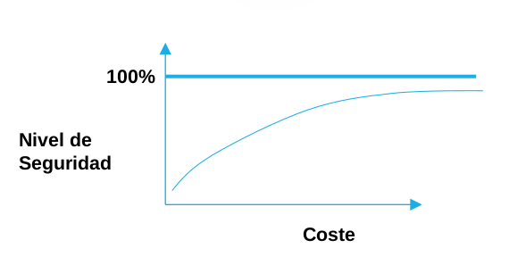
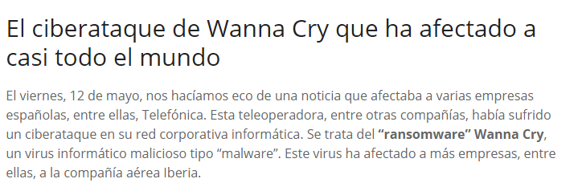
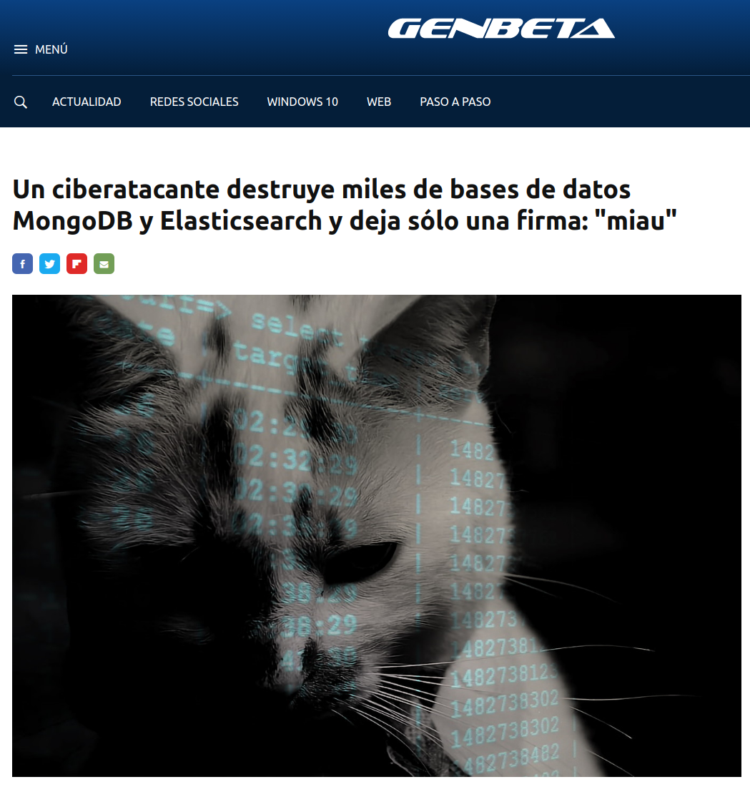
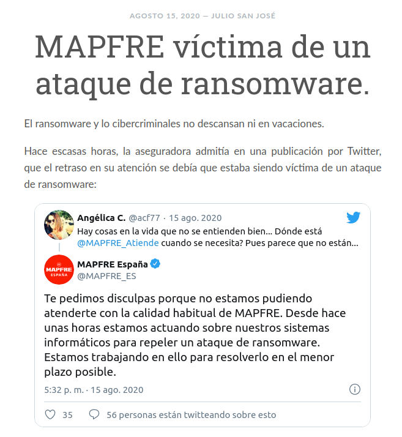
https://derechodelared.com/mapfre-victima-de-un-ataque-de-ransomware/

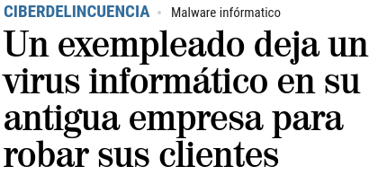
https://www.elmundo.es/madrid/2019/05/22/5ce5280afdddff7b688b46a2.html
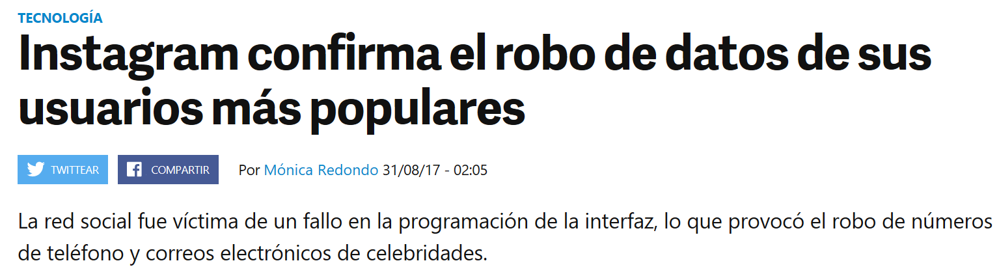
https://www.elmundo.es/madrid/2019/05/22/5ce5280afdddff7b688b46a2.html
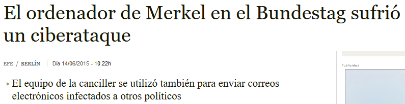
https://www.abc.es/internacional/20150614/abci-ordenador-merkel-ciberataque-201506141013.html
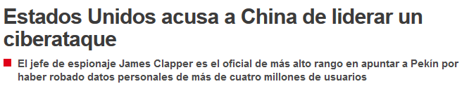
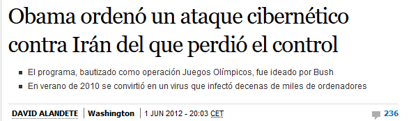
https://elpais.com/internacional/2012/06/01/actualidad/1338572841_317814.html
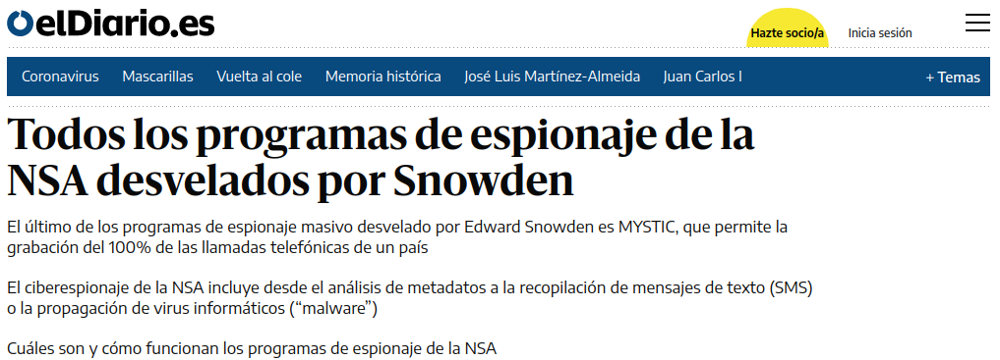
"Quien renuncia a su libertad por seguridad, no merece ni libertad ni seguridad" B. Franklin
Vigilancia permanente. Edward Snowden. Grupo Planeta, 2019.
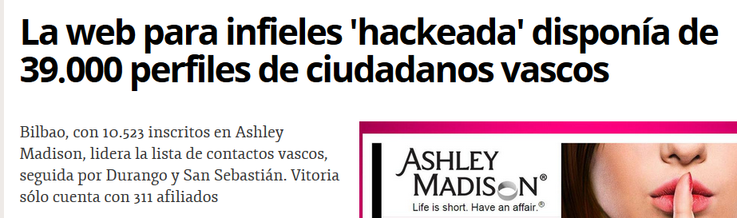

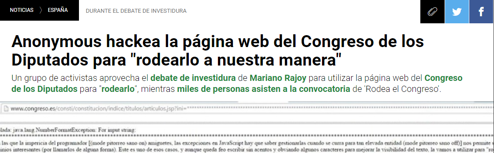
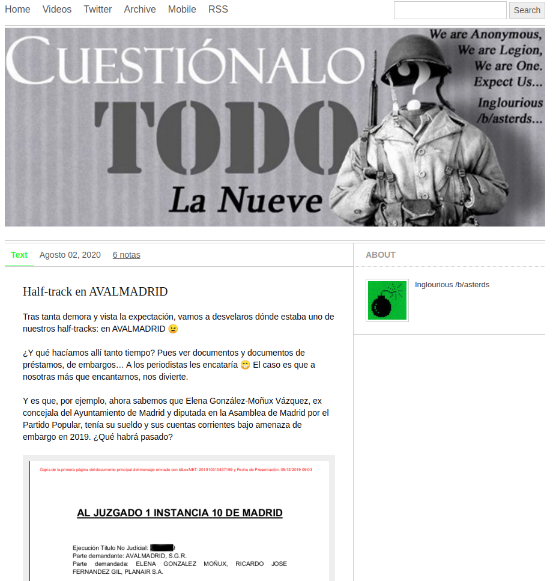
https://la9deanon.tumblr.com/post/625357883903754240/half-track-en-avalmadrid
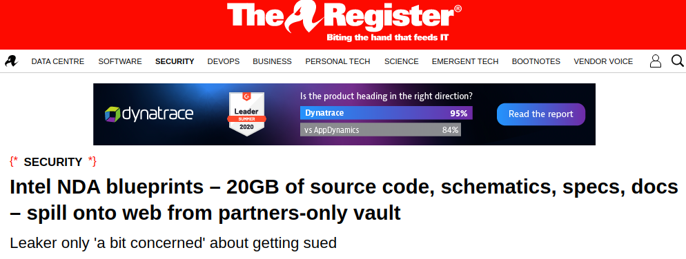
https://www.theregister.com/2020/08/06/intel_nda_source_code_leak/
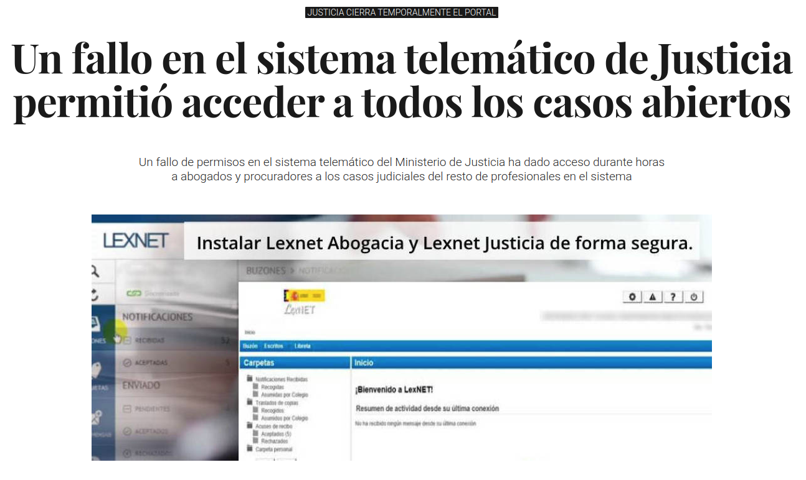
https://www.elconfidencial.com/tecnologia/2017-07-27/lexnet-justicia-sistema-telematico_1421771/
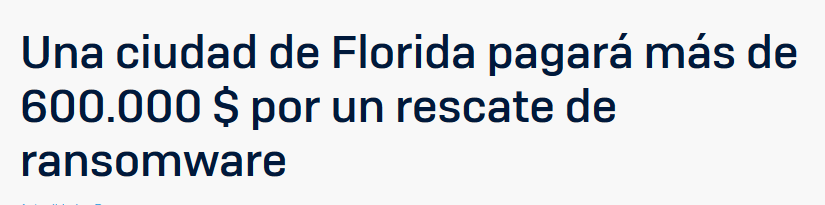
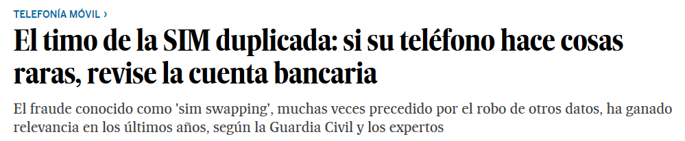
https://elpais.com/economia/2019/05/21/actualidad/1558455806_935422.html
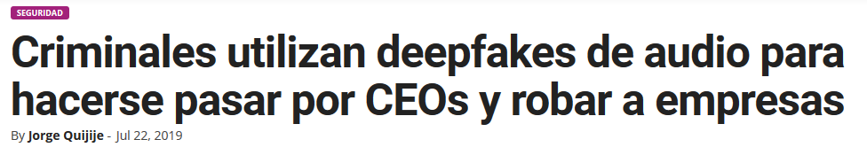
https://www.tekcrispy.com/2019/07/22/deepfakes-audio-empresas/
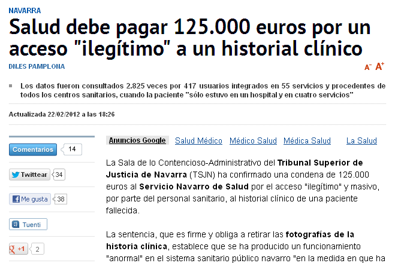
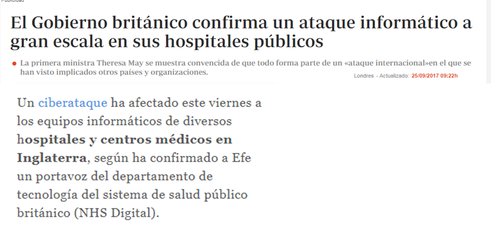
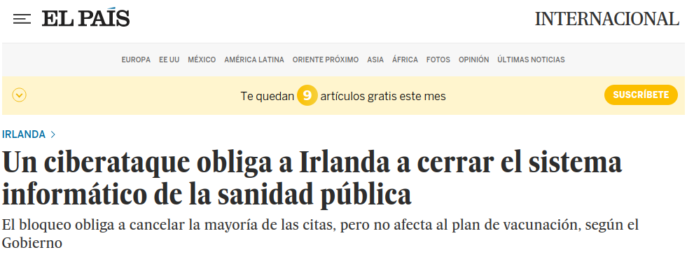
Se garantiza que la información transmitida o almacenada en un sistema informático sólo podrá ser leída por su legítimo destinatario
Si dicha información cae en manos de terceras personas no podrán acceder al contenido original
Se garantiza que la información no ha sido modificada desde su creación o durante su transmisión
Permite detectar si se ha añadido, modificado o eliminado parte de la información almacenada, procesada o transmitida
La información debe estar disponible para sus legítimos usuarios y propietarios
Se garantiza el correcto funcionamiento del sistema informático mediante un diseño suficientemente robusto frente a ataques e interferencias
Se puede comprobar la identidad del usuario que crea o accede a la información
También se habla de autenticidad de un equipo que se conecta a una red o intenta acceder a un servicio
Se demuestra la autoría de la información mediante un mecanismo probatorio que impida al usuario que la ha creado y enviado negar esta circunstancia
Se aplica la misma situación al destinatario de la información
Especialmente importante en transacciones comerciales
Control de acceso a equipos y servicios
Permite controlar el acceso de los usuarios a los distintos equipos y servicios ofrecidos por el sistema informático, una vez superado el acceso de autenticación de cada usuario
Permite monitorizar el uso de los distintos recursos del sistema por parte de los usuarios previamente autenticados y autorizados
Permite probar quién ha sido el creador de determinada información
Permite probar que un determinado documento o un contenido digital protegido por derechos de autor pertenece a un determinado usuario u organización que ostenta la titularidad de esos derechos
Garantiza el anonimato de los usuarios que acceden a los recursos y consumen determinados tipos de servicios, preservando así su privacidad
Puede entrar en conflicto con otros ya mencionados, como la autenticación o la auditoría del acceso a los recursos
Impide la realización de "ataques de repetición" (replay attacks) por parte de usuarios maliciosos, consistentes en la interceptación y posterior reenvío de mensajes para tratar de engañar al sistema y provocar operaciones no deseadas, como realizar varias veces una transacción bancaria
Permite confirmar la realización de una operación o transacción, reflejando los usuarios o entidades que han intervenido en ésta
Certificación de fechas
Se demuestra el instante concreto en que se ha enviado un mensaje o se ha realizado una determinada operación, generalmente con una referencia UTC (Universal Time Clock)
Para realizar transacciones electrónicas se requiere garantizar la autenticación de las partes que intervienen, el contenido e integridad de los mensajes o la constatación de la realización de la operación o comunicación en un determinado instante personal
El "tercero de confianza" es un organismo que se encarga de certificar la realización y el contenido de las operaciones y de avalar la identidad de los intervinientes, dotando a éstas de una mayor seguridad jurídica
Ejemplo: Autoridades de Certificación de la firma electrónica como Izenpe
Administración de seguridad:
Dirección:
Usuarios:
Identificar los bienes a proteger
Estimar el valor (V) de esos bienes
Identificar las amenazas que sufren dichos bienes
Estimar la probabilidad (P) de que esas amenazas realmente se produzcan
Analizar las medidas necesarias para eliminar esas amenazas
Estimar el coste (C) de implantar esas medidas
C < P * V (Cuando el coste es menor que la probabilidad multiplicada por el valor, aplicar las medidas)